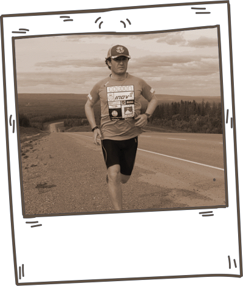

We’ll fly the winner to the French Alps, where you’ll join Kevin Carr — the first athlete to ever run a continuous circumnavigation of the world — for two days guided running on some of the most stunning trails in the world!
We’ll also kit you out head to toe in Inov8 racing kit+shoes and a Suunto GPS watch — Kevin’s choice of kit when running in the mountains.
Once you return home Kevin will provide you with 6 months online coaching to help you progress to your next running goal.
The amazing true story of the first athlete to ever run a solo circumnavigation of the world!
Enter the ultimate Trail Running Giveaway today and you'll automatically receive a sneak preview of the soon to be released book “Mountain Marathon Man – Confessions Of The Fastest Runner Around The World”
32.7 million steps
622 marathons in 621 days
16,300 miles / 26,232.48 km
The 28th of July 2013, Dartmoor, England, U.K., Kevin began running east, he continued to head east, running every inch of land through 26 countries, crossing four continents from coast to coast until he made it all the way back to the very same spot from where he had set forth, some 621 days later.
Having closed a loop around planet Earth, becoming the first athlete to ever run a continuous circumnavigation of the world, and the fastest runner to have run around the world.

He ran solo and unsupported, pushing all his kit in a cart, camping at the side of the road:
climbed up and over the Andes,
crossed the infamous Nullarbor Plain,
fought off packs of feral dogs,
knocked over by a motorist,
twice entered the Arctic where he met with wolves,
stalked by a bear in the Northwest Territories, Canada,
faced temperature extremes of -31 °C to +55 °C.
The book “Mountain Marathon Man – Confessions Of The Fastest Runner Around The World” is the book where Kevin shares the above highlights amongst many others, in the true account of one of the greatest expeditions of all time, due to be released winter 2017.